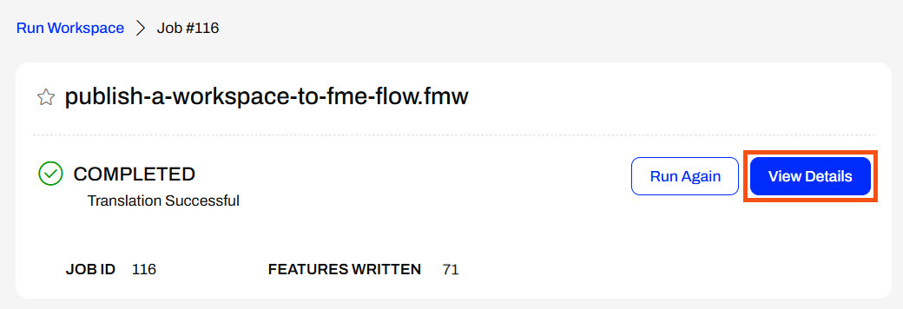
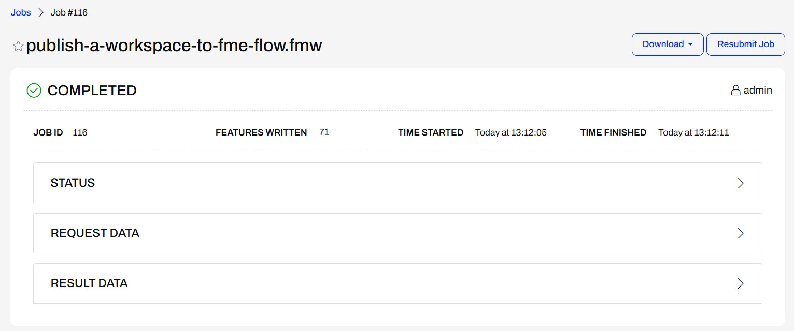
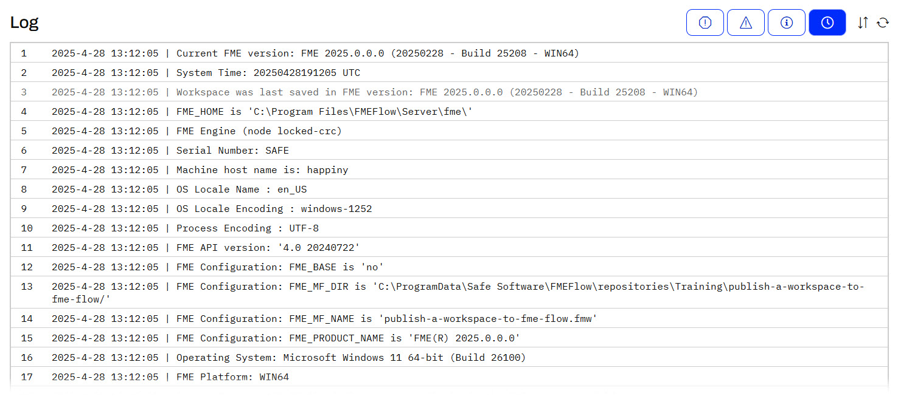
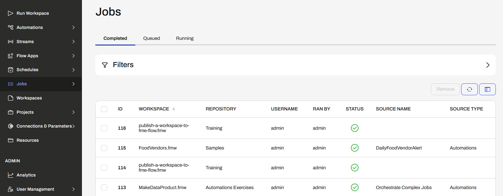
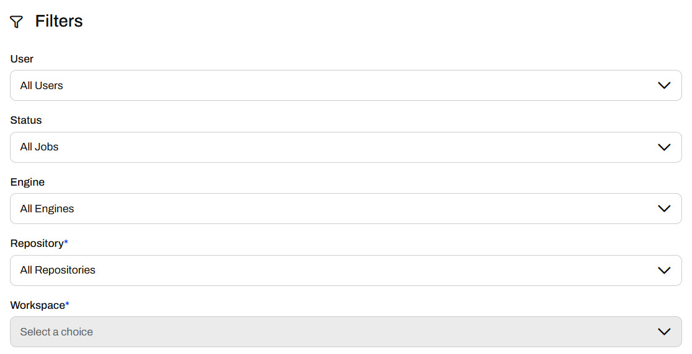
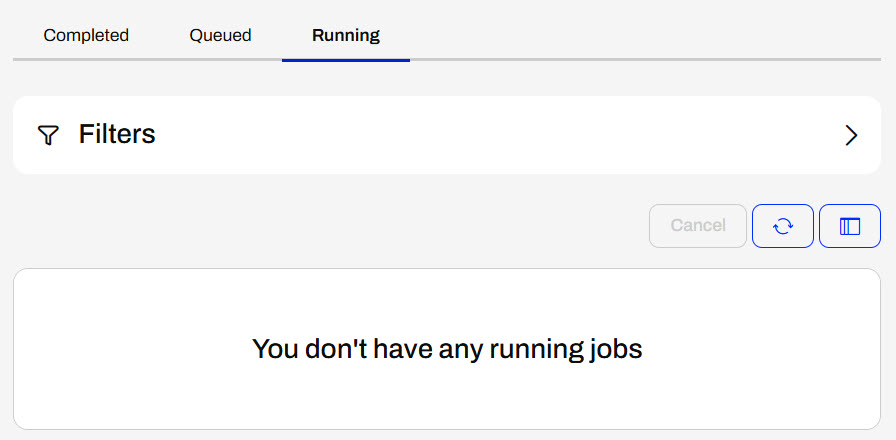
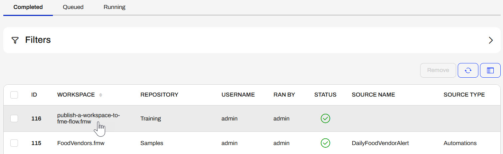

If Sven was still on the Run Workspace page, he could click View Details to open the job information alternatively to navigating through the Jobs page.
After completing this lesson, you’ll be able to:
After running a workspace on FME Flow, you can see the translation status from the Run Workspace page. You may also click on View Details to open Jobs and view more information about the job.

The detailed Jobs page shows more information about the translation and contains expandable sections with even more information. The Status section contains simple statistics about the job. Request Data includes information the FME Flow core passes to the FME Engines to carry out the job request, while Result Data is information about the translation result the Engine passes back to the FME Flow Core.

The next section of the page shows the job log. For a completed translation, you see the same information in a job log on FME Flow as in the translation log in FME Workbench.

The buttons at the top right allow you to filter job logs for errors, warnings, and informative messages.
If you're no longer on the completed Run Workspace page and wish to view job details, you can view all recent jobs from the Jobs page. If you click on a job, the same detailed view opens as from View Details on the completed Run Workspace page.

The Jobs page shows information about each workspace translation, such as the job ID number, the workspace name, the user who ran it, and the job source, such as Automations or Flow Apps. The Customize Columns button on the right side allows you to select and change which data fields are displayed in the Jobs view.
You may also filter jobs by various criteria to find specific job information.

Across the top, you may view jobs currently in the Queued or Running state. If a job is queued, it waits for an available engine to process the translation. The Running section shows jobs that an engine is currently processing. The list will be empty if no jobs are currently in either of these states.

In the last exercise, Sven ran his workspace on FME Flow and saw that it completed successfully. Although the workspace ran successfully, Sven should know where to access more detailed job information for monitoring, development, and troubleshooting.
Follow along with Sven as he views the job log for the job he ran in the previous exercise.
In FME Flow, Sven clicks Jobs on the left side menu. The Completed Jobs tab opens, and he clicks on the latest job that ran the publish-a-workspace-to-fme-flow.fmw workspace to open the job information.

If Sven was still on the Run Workspace page, he could click View Details to open the job information alternatively to navigating through the Jobs page.
Sven's job completed successfully; however, if it failed, this would be the best place to look for information about what went wrong.
Sven expands the Status, Request Data, and Result Data tabs and inspects the job log to answer the following questions:
Remember the answers to these questions - you'll need some of them to complete the quiz!